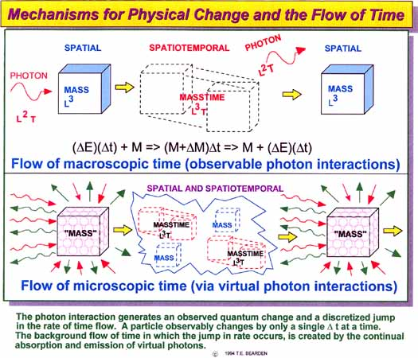

Mind Control and EM Wave
Polarization Transductions, Part 1
©Copyright 1999 by T.E. Bearden, USA
|
Special
Note This
article refers to experimental research techniques which can be
detrimental or lethal in the hands of any but highly skilled,
qualified experimental scientists proceeding under proper
laboratory
safety procedures. The purpose of this article is strictly for
information to properly qualified and authorized scientists in
certified laboratories. We do not propose or condone any use of
these procedures for nonapproved practice of medicine without a
license. Neither the publisher nor the author are responsible
for accidents or outcomes in the use of these experimental procedures
and techniques. Any researcher who performs these procedures
and experiments is acting on his or her own volition, and is
solely responsible for insuring safety, qualifications, and
legality of the acts and their results. We neither suggest nor
condone unauthorized experimentation on human subjects. Such
is a criminal violation of the constitutional rights of the
subject under Federal and State laws, and is both illegal and
immoral.
|
Abstract For some time we have been repeatedly queried about the technical mechanisms and unusual electrodynamics of advanced mind control research, both in the West and abroad. Calling full attention to the special note above, in this paper we present a high-level overview of the novel electromagnetic nature of mind operations, mind and body coupling, and intent―the induction of physical 3-space EM energy changes into the brain and nervous system, and into every cell of the body, from the mind's time-like coherent operations. We summarize the time-polarized electrodynamics used to engineer and affect mind operations and the mind-body coupling loop. Transduction mechanisms whereby differing EM wave polarizations can be transformed one-into-the-other are presented. We give two specific examples of lethal foreign military tests in 1997 of advanced mind control weapons against two military pilots over the central U.S. Some dangers and potential benefits of the emerging mind control technology are pointed out |

Figure 1. Mechanism that generates a mass's flow through time.